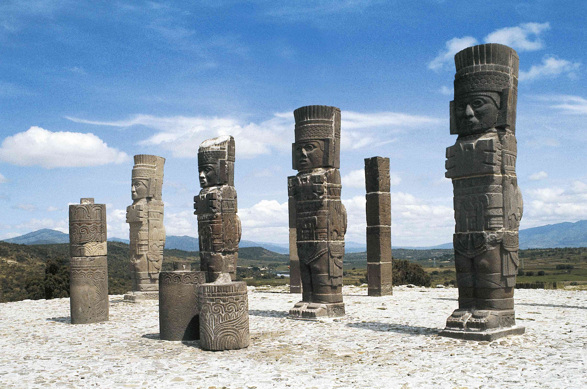

Cultura Tolteca
La cultura tolteca es una de las tantas civilizaciones precolombinas de Mesoamérica, que habitó la zona del actual México y su desarrollo abarcó parte de los períodos clásico y postclásico mesoamericano, es decir, entre los años 800 d.C. y 1200 d.C.

Historia de la cultura tolteca
Los toltecas tenían raíces en el pueblo tolteca-chichimeca y durante el siglo IX d.C. migraron desde los desiertos del noroeste hasta Culhuacán en el Valle de México.
Allí establecieron el primer asentamiento, la ciudad de Tollan o Tula, que significa “lugar de juncos”, una antigua expresión mesoamericana que hace referencia a todos los grandes asentamientos. La ciudad de Tula creció hasta un área de catorce kilómetros cuadrados y adquirió una población aproximada de cuarenta mil habitantes.
La organización sociopolítica de los toltecas era monárquica y de gran poder militar, con el que peleaban y conquistaban tierras vecinas. El primer líder tolteca fue Ce Técpatl Mixcoatl.
Su hijo Ce Acatl Topiltzin, nacido a comienzos del siglo 900 d.C., adquirió fama por ser un gran gobernante que ejerció influencias más pacíficas y prósperas para el pueblo. Esa época fue considerada la edad de oro de Tula
Se desconoce exactamente cómo fue el final de la civilización tolteca, aunque algunas hipótesis indican que podría haber sido consecuencia de fenómenos naturales (como sequías sostenidas en el tiempo), sumado a disputas internas de poder (habría evidencias, entre las legendarias historias, acerca de una batalla entre los dioses Quetzalcóatl y Tezcatlipoca).
Además, a mediados del siglo XII d.C. bajo el gobierno de Huemac, el último líder tolteca, la ciudad de Tula fue saqueada y violentada por los aztecas de manera sistemática, con evidencia de columnas y estatuas quemadas y enterradas de manera deliberada.
Aportes de la cultura Tolteca
El nombre tolteca tenía cierto prestigio, por lo que otras civilizaciones (como los mayas y los aztecas) apreciaban las prácticas toltecas en cuanto al arte, la religión, la escritura, la medicina y el trabajo de los artesanos. Los aztecas empleaban la expresión toltecayotl que significa “tener un corazón tolteca”, lo que equivalía a ser digno y sobresalir en todas las acciones.
Los artesanos toltecas fueron famosos por su gran habilidad y establecieron estándares que otras civilizaciones mexicanas tratarían de seguir. Fueron avanzados alfareros y expertos metalúrgicos que trabajaban metales (como el oro) y piedras preciosas (como la obsidiana) que empleaban principalmente para la fabricación de armas.
También, se destacaron en la arquitectura: si bien las pirámides existieron en México mucho antes que los toltecas, éstos lograron mejorar la escultura de las columnas, los frisos y demás detalles arquitectónicos, a niveles muy superiores.
Economía
La economía tolteca se basó en la agricultura, a través de amplios cultivos abastecidos por un complejo sistema de canales de riego. Cultivaban algodón, maguey, maíz, chile y frijol. También formaron parte de su desarrollo económico la artesanía y el trabajo de piedras preciosas.

Notas
Tenian una inmensa cantidad de Dioses
Considerados de los mejores escultores